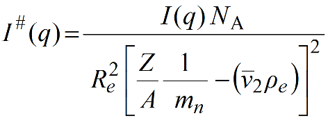
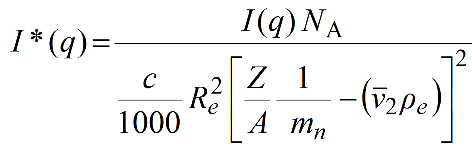

|
Manual
|
SOMO HPLC/KIN Module Options Parameters Settings
Last updated: June 2024
In this panel, you can set/modify several parameters that are used in the HPLC/KIN module to set the time scale of the SAXS frames and to convert "raw" I(q) data to an absolute scale.
-
Frame interval [s]: defines the time interval in seconds between successive SAXS frames acquired in either chromatography or kinetic mode. These frames usually are identified by a progressive number, and the entry in this field will allow converting those numbers into a time signature. Default: 1 s.
-
Default concentration [mg/mL]: this is a specific entry for kinetic data, which are usually acquired by mixing reagents attaining a final known concentration that remains constant during the SAXS data acquisition. Enter an appropriate value, in mg/mL, for you sample. This field is left blank for HPLC-type data, for which time-dependent concentrations for each SAXS frame are usually determined by a separate concentration detector. Default: blank.
-
Default partial specific volume [mL/g]: enter here the partial specific volume v2, in mL/g, for your sample. This value is required to calculate a molecular weight from SAXS data. Default: 0.72 mL/g (average value for proteins).
-
Default I0 standard experimental [a.u.]: this is the intensity extrapolated to 0 scattering angle of a standard of known scattering properties, used to normalize SAXS data. Nowadays, SAXS data are provided to the user already normalized, so this entry and the following one might not be used (a question is asked when the Make I#,I*(q) function is called in the HPLC/KIN module). The Default: 5.4*10-5 value is the I0 of a water standard utilized at the Synchrotron SOLEIL SWING beamline during the early development of this software.
-
I0 standard theoretical [cm^-1]: this is the expected intensity at 0 scattering angle of the standard utilized to normalize the SAXS data. The Default: 0.01633 [cm-1] value is the theoretical I0 of a water standard.
-
Diffusion length [cm]: this is the diffusion length of the electron Re. Default: 2.82*10-13 [cm].
-
Electron/nucleon ratio Z/A: the Default: 1.87 value is that used for proteins. It should be recalculated for other types of samples.
-
Nucleon mass [g]: the Default: 1.6606*10-24 [g] mn value corresponds to 1/Avogadro's number.
-
Solvent electron density [e A^-3]: the Default: 0.334 [Å-3] for ρe is the value for water. For buffers, a 0.335 Å-3 value is likely more accurate.
The normalized I(q) are converted in the HPLC/KIN module to I#(q) in [g2/(cm3*mol)] using this equation:

With c in [mg/mL], I*(q) in g mol-1 are obtained as:

Pressing Quit will exit without retaining any input, pressing Keep will exit keeping any input entered but not saving it in a file, pressing Save will exit keeping any input entered and saving it later on, when exiting the program, in the global US-SOMO configuration file (somo.config).
www contact: Emre Brookes
This document is part of the UltraScan Software Documentation
distribution.
Copyright © notice.
The latest version of this document can always be found at:
http://somo.aucsolutions.com
Last modified on June 25, 2024
|